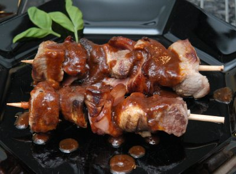

| Zutaten für 4 Personen: | |
| 400 g | Lammfleisch |
| Marinade: | |
| 1 | Knoblauchzehe |
| 1 TL | Salz |
| 1 Prise | Pfeffer |
| 1 | Lorbeerblatt |
| 2 EL | Erdnussöl |
| 2 dl | Rotwein |
| 2 EL | Rotweinessig |
| Dazu: | |
| 100 g | Silberzwiebeln |
| 200 g | Specktranchen |
| 2 EL | Erdnussöl |
| 1 EL | Currypulver |
| 2 dl | Ketchup |
| 8 | Spiesse |
Fleisch in 2 cm grosse Würfel schneiden und in ein enges Gefäss legen.
Marinade zubereiten: Knoblauch schälen und mit wenig Salz zerdrücken. Alle Zutaten zur Marinade gut verrühren und über das Fleisch giessen. Fleisch zugedeckt ca. 2 Stunden marinieren lassen.
Fleisch abtropfen lassen und mit saugfähigem Papier trocknen.
Fleisch, Silberzwiebeln (Champignons) und Specktranchen abwechslungsweise auf acht Spiesschen stecken.
Spiesschen im Öl rundum anbraten.
Auf eine vorgewärmte Platte geben und warm stellen.
Fond mit Marinade ablöschen. Curry mit Ketchup mischen und zur Sauce geben. Sauce aufkochen und über die Spiesschen geben.
Diese Spiesschen können auch mit 400 g Schweinefleisch oder 200 g gut gelagerter Huft und 200 g in 1 cm dicke Tranchen geschnittener Schweinsleber zubereitet werden. Wer will, kann die Silberzwiebelchen durch 250 g Champignons ersetzen.
Herbert Eigenmann, Code: LMS
Habe das am 25.3.2008 mit den Folien Kartoffeln mit Ricotta-Füllung zubereitet. Hat sensationell geschmeckt. Ich fand kein Lammfleisch in HB-Migros sondern nur irgend so Scheinshuft-Möckli. Nach einem Tag in der Marinade waren die aber auch durch. Statt Silberzwiebeln habe ich Champignons aufgespiesst. Ein Stück Zwiebel wäre auch gut gekommen. In der Sauce verwendete ich statt das alberne gelbe Curry Pulver einen Esslöffel rote Currypaste vom Thailänder. Hat super geschmeckt!
@LINKBACK_TAG@ @WAKELOCK@